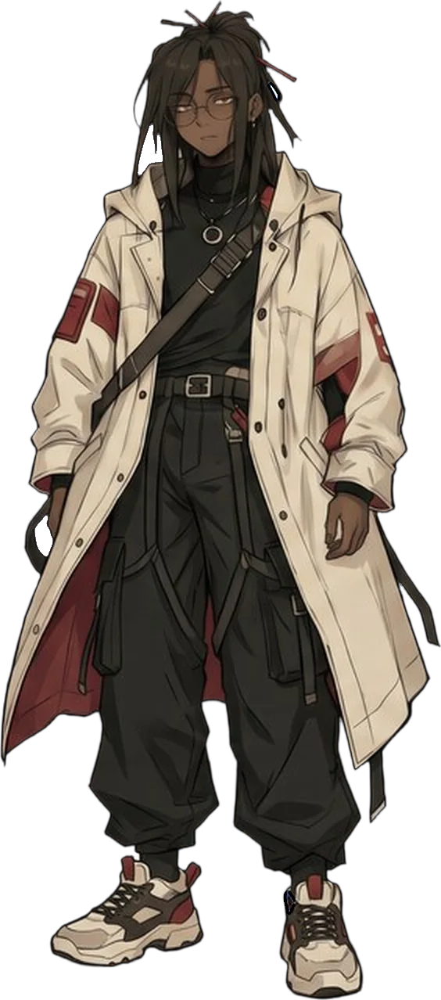
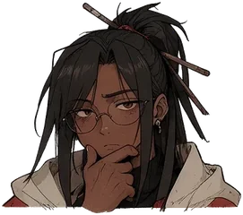
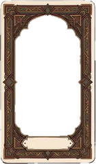
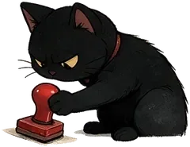
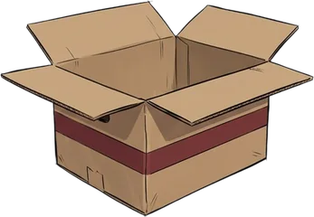
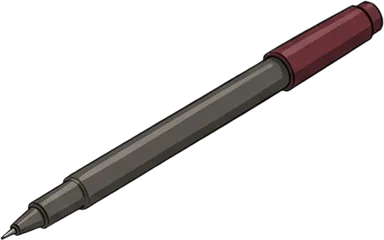
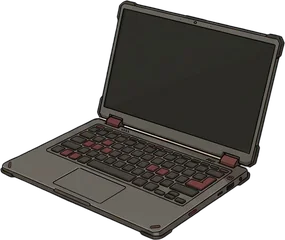
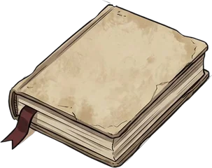
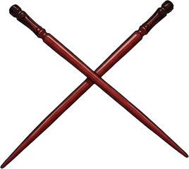
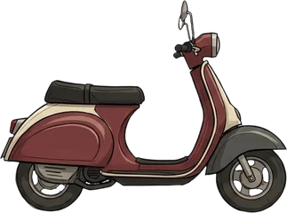

<section class="nl-menu p4" aria-label="Numidea Labs, menu">
<div class="nl-stage">
 <div class="nl-abs nl-stripes" aria-hidden="true"></div>
 <div class="nl-abs nl-dots" aria-hidden="true"></div>
 <canvas class="nl-abs nl-mesh" aria-hidden="true"></canvas>
 <div class="nl-abs nl-shake" aria-hidden="true">
  <div class="nl-abs nl-slab"></div>
  <div class="nl-abs nl-shard s1"></div><div class="nl-abs nl-shard s2"></div><div class="nl-abs nl-shard s3"></div>
  <div class="nl-abs nl-burst"></div>
  <div class="nl-abs nl-mark">ヌミデア</div>
  <div class="nl-abs nl-echo"></div>
  
 </div>
 <p class="nl-abs nl-line" data-text="Numidea Labs · le studio de nuit" aria-hidden="true">Numidea Labs · le studio de nuit</p>
 <h1 class="nl-abs nl-name"><span aria-hidden="true"><span class="nl-ch" style="transform:translateY(-3px) rotate(2deg)">N</span><span class="nl-ch" style="transform:translateY(2px) rotate(-1deg)">u</span><span class="nl-ch" style="transform:translateY(-1px) rotate(4deg) scale(1.14)">m</span><span class="nl-ch" style="transform:translateY(3px) rotate(-2deg)">i</span><span class="nl-ch" style="transform:translateY(-2px) rotate(1deg)">d</span><span class="nl-ch" style="transform:translateY(0px) rotate(-3deg)">e</span><span class="nl-ch" style="transform:translateY(-3px) rotate(2deg)">a</span><br><span class="nl-ch" style="transform:translateY(3px) rotate(-2deg)">L</span><span class="nl-ch" style="transform:translateY(-2px) rotate(1deg)">a</span><span class="nl-ch" style="transform:translateY(0px) rotate(-3deg)">b</span><span class="nl-ch" style="transform:translateY(-3px) rotate(2deg)">s</span></span><span class="nl-sr">Numidea Labs</span></h1>

 <div class="nl-abs nl-hud nl-moods" aria-hidden="true"><div class="nl-moods-grid"><div class="nl-mood on" data-face="smirk"></div><div class="nl-mood" data-face="focus"></div><div class="nl-mood" data-face="laugh"></div><div class="nl-mood" data-face="think"></div></div><span class="nl-tag">humeurs</span></div>
 <div class="nl-abs nl-hud nl-say"><div class="nl-say-in"><span class="nl-say-dest">Travaux → /scene/</span><p class="nl-say-box">Des vrais sites, en ligne. Clique, tu verras.</p></div></div>
 <div class="nl-abs nl-hud nl-kuro" aria-hidden="true"><span class="nl-tag">Kūro : approuve</span></div>

 <nav aria-label="Navigation principale"><ul class="nl-nav">
<li><a class="nl-item nl-c0 l on" href="/scene/" style="--x:70px;--y:410px;--r:-12deg;--rm:-3deg;--w:400px;--fs:46px;--d:0ms" data-label="Travaux" data-dest="/scene/" data-say="Des vrais sites, en ligne. Clique, tu verras." data-face="smirk" data-kuro="stamp" data-kuro-say="approuve">
 <span class="nl-pr"><span class="nl-sh"></span><span class="nl-face"></span>
  <span class="nl-tx"><span class="nl-key" aria-hidden="true">1</span><span class="nl-lab" aria-hidden="true"><span class="nl-ch" style="transform:translateY(0px) rotate(-3deg)">T</span><span class="nl-ch" style="transform:translateY(-3px) rotate(2deg)">r</span><span class="nl-ch" style="transform:translateY(2px) rotate(-1deg)">a</span><span class="nl-ch" style="transform:translateY(-1px) rotate(4deg) scale(1.14)">v</span><span class="nl-ch" style="transform:translateY(3px) rotate(-2deg)">a</span><span class="nl-ch" style="transform:translateY(-2px) rotate(1deg)">u</span><span class="nl-ch" style="transform:translateY(0px) rotate(-3deg)">x</span></span><span class="nl-sr">Travaux</span></span>
  <span class="nl-sub">Les sites livrés</span>
  
 </span>
</a></li>
<li><a class="nl-item nl-c1 l" href="/tarifs/" style="--x:34px;--y:532px;--r:-4deg;--rm:2deg;--w:330px;--fs:40px;--d:42ms" data-label="Tarifs" data-dest="/tarifs/" data-say="Le prix est écrit avant qu’on commence. Pas de surprise." data-face="focus" data-kuro="judge" data-kuro-say="juge">
 <span class="nl-pr"><span class="nl-sh"></span><span class="nl-face"></span>
  <span class="nl-tx"><span class="nl-key" aria-hidden="true">2</span><span class="nl-lab" aria-hidden="true"><span class="nl-ch" style="transform:translateY(-3px) rotate(2deg)">T</span><span class="nl-ch" style="transform:translateY(2px) rotate(-1deg)">a</span><span class="nl-ch" style="transform:translateY(-1px) rotate(4deg) scale(1.14)">r</span><span class="nl-ch" style="transform:translateY(3px) rotate(-2deg)">i</span><span class="nl-ch" style="transform:translateY(-2px) rotate(1deg)">f</span><span class="nl-ch" style="transform:translateY(0px) rotate(-3deg)">s</span></span><span class="nl-sr">Tarifs</span></span>
  <span class="nl-sub">Prix fixe, écrit avant</span>
  
 </span>
</a></li>
<li><a class="nl-item nl-c2 l" href="/hub/" style="--x:150px;--y:650px;--r:5deg;--rm:-2deg;--w:400px;--fs:42px;--d:84ms" data-label="L’Atelier" data-dest="/hub/" data-say="Là où je fabrique. Entre, mais ne touche pas au clavier." data-face="think" data-kuro="peek" data-kuro-say="surveille">
 <span class="nl-pr"><span class="nl-sh"></span><span class="nl-face"></span>
  <span class="nl-tx"><span class="nl-key" aria-hidden="true">3</span><span class="nl-lab" aria-hidden="true"><span class="nl-ch" style="transform:translateY(2px) rotate(-1deg)">L</span><span class="nl-ch" style="transform:translateY(-1px) rotate(4deg) scale(1.14)">’</span><span class="nl-ch" style="transform:translateY(3px) rotate(-2deg)">A</span><span class="nl-ch" style="transform:translateY(-2px) rotate(1deg)">t</span><span class="nl-ch" style="transform:translateY(0px) rotate(-3deg)">e</span><span class="nl-ch" style="transform:translateY(-3px) rotate(2deg)">l</span><span class="nl-ch" style="transform:translateY(2px) rotate(-1deg)">i</span><span class="nl-ch" style="transform:translateY(-1px) rotate(4deg) scale(1.14)">e</span><span class="nl-ch" style="transform:translateY(3px) rotate(-2deg)">r</span></span><span class="nl-sr">L’Atelier</span></span>
  <span class="nl-sub">Outils, démos, coulisses</span>
  
 </span>
</a></li>
<li><a class="nl-item nl-c0 r" href="/hub/lanterne/" style="--x:770px;--y:396px;--r:-8deg;--rm:3deg;--w:470px;--fs:44px;--d:126ms" data-label="La Lanterne" data-dest="/hub/lanterne/" data-say="Ce que j’ai appris, rangé pour que tu l’apprennes plus vite." data-face="laugh" data-kuro="loaf" data-kuro-say="se repose">
 <span class="nl-pr"><span class="nl-sh"></span><span class="nl-face"></span>
  <span class="nl-tx"><span class="nl-key" aria-hidden="true">4</span><span class="nl-lab" aria-hidden="true"><span class="nl-ch" style="transform:translateY(-1px) rotate(4deg) scale(1.14)">L</span><span class="nl-ch" style="transform:translateY(3px) rotate(-2deg)">a</span><span class="nl-ch" style="transform:translateY(-2px) rotate(1deg)"> </span><span class="nl-ch" style="transform:translateY(0px) rotate(-3deg)">L</span><span class="nl-ch" style="transform:translateY(-3px) rotate(2deg)">a</span><span class="nl-ch" style="transform:translateY(2px) rotate(-1deg)">n</span><span class="nl-ch" style="transform:translateY(-1px) rotate(4deg) scale(1.14)">t</span><span class="nl-ch" style="transform:translateY(3px) rotate(-2deg)">e</span><span class="nl-ch" style="transform:translateY(-2px) rotate(1deg)">r</span><span class="nl-ch" style="transform:translateY(0px) rotate(-3deg)">n</span><span class="nl-ch" style="transform:translateY(-3px) rotate(2deg)">e</span></span><span class="nl-sr">La Lanterne</span></span>
  <span class="nl-sub">La librairie</span>
  
 </span>
</a></li>
<li><a class="nl-item nl-c1 r" href="/hub/bible/" style="--x:880px;--y:520px;--r:5deg;--rm:-2deg;--w:350px;--fs:40px;--d:168ms" data-label="La Bible" data-dest="/hub/bible/" data-say="Moi, Kūro, et les règles du dessin. Tu peux même me parler." data-face="deadpan" data-kuro="love" data-kuro-say="adore">
 <span class="nl-pr"><span class="nl-sh"></span><span class="nl-face"></span>
  <span class="nl-tx"><span class="nl-key" aria-hidden="true">5</span><span class="nl-lab" aria-hidden="true"><span class="nl-ch" style="transform:translateY(3px) rotate(-2deg)">L</span><span class="nl-ch" style="transform:translateY(-2px) rotate(1deg)">a</span><span class="nl-ch" style="transform:translateY(0px) rotate(-3deg)"> </span><span class="nl-ch" style="transform:translateY(-3px) rotate(2deg)">B</span><span class="nl-ch" style="transform:translateY(2px) rotate(-1deg)">i</span><span class="nl-ch" style="transform:translateY(-1px) rotate(4deg) scale(1.14)">b</span><span class="nl-ch" style="transform:translateY(3px) rotate(-2deg)">l</span><span class="nl-ch" style="transform:translateY(-2px) rotate(1deg)">e</span></span><span class="nl-sr">La Bible</span></span>
  <span class="nl-sub">Qui je suis, et le chat</span>
  
 </span>
</a></li>
<li><a class="nl-item nl-c2 r" href="https://wa.me/213672412578?text=Bonjour%20Numidea%20Labs%20%E2%80%94%20j&#x27;aimerais%20parler%20d&#x27;un%20projet." target="_blank" rel="noopener" style="--x:742px;--y:640px;--r:11deg;--rm:2deg;--w:410px;--fs:48px;--d:210ms" data-label="Contact" data-dest="WhatsApp" data-say="Pas d’intermédiaire. Tu écris, c’est moi qui réponds." data-face="pointyou" data-kuro="smug" data-kuro-say="est d’accord">
 <span class="nl-pr"><span class="nl-sh"></span><span class="nl-face"></span>
  <span class="nl-tx"><span class="nl-key" aria-hidden="true">6</span><span class="nl-lab" aria-hidden="true"><span class="nl-ch" style="transform:translateY(-2px) rotate(1deg)">C</span><span class="nl-ch" style="transform:translateY(0px) rotate(-3deg)">o</span><span class="nl-ch" style="transform:translateY(-3px) rotate(2deg)">n</span><span class="nl-ch" style="transform:translateY(2px) rotate(-1deg)">t</span><span class="nl-ch" style="transform:translateY(-1px) rotate(4deg) scale(1.14)">a</span><span class="nl-ch" style="transform:translateY(3px) rotate(-2deg)">c</span><span class="nl-ch" style="transform:translateY(-2px) rotate(1deg)">t</span></span><span class="nl-sr">Contact</span></span>
  <span class="nl-sub">WhatsApp, directement moi</span>
  
 </span>
</a></li>
 </ul></nav>

 <div class="nl-abs nl-hud nl-langs"><a href="/" lang="fr" aria-current="true">FR</a><a href="/en/" lang="en">EN</a><a href="/ar/" lang="ar">AR</a></div>
 <button class="nl-abs nl-hud nl-replay" type="button">Rejouer l’intro</button>
 <button class="nl-abs nl-skip" type="button">Passer l’intro</button>
 <div class="nl-abs nl-go" aria-hidden="true"></div>
 <div class="nl-abs nl-gotxt" aria-hidden="true"><span class="nl-golab"></span><span class="nl-godest"></span></div>
</div>
</section>
